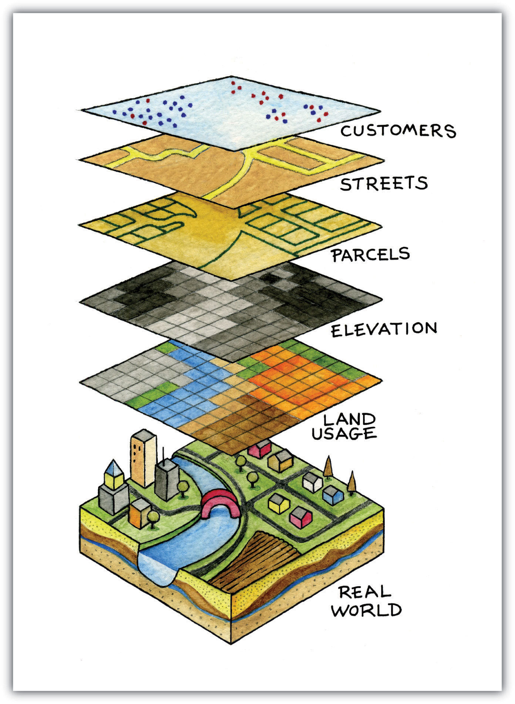
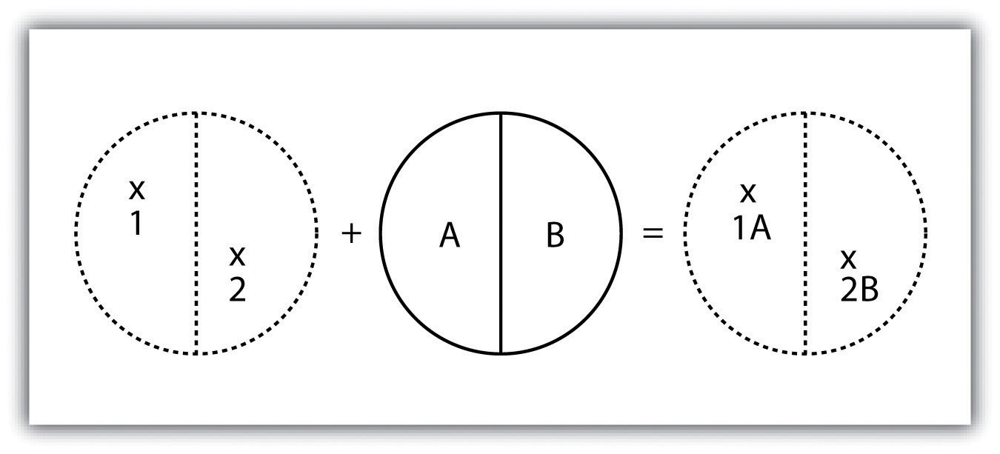
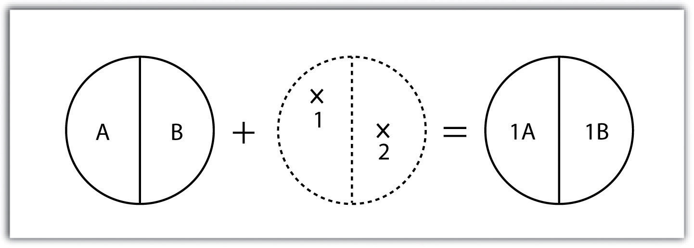
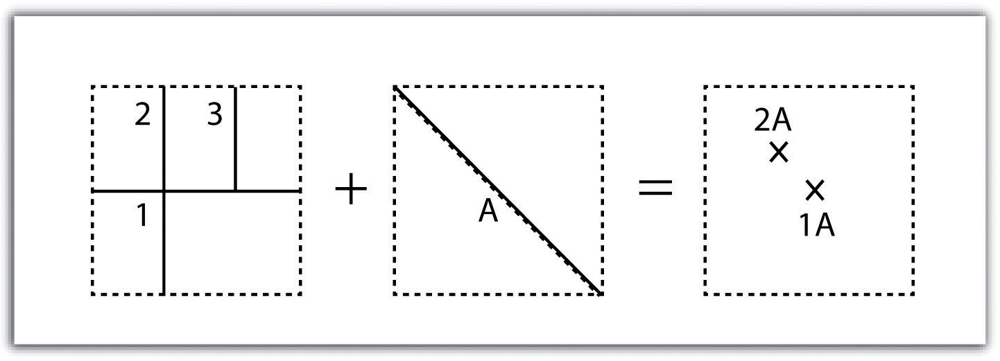
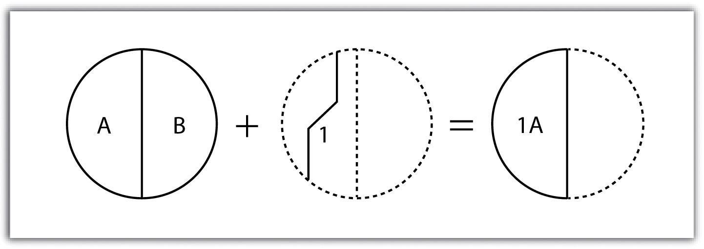
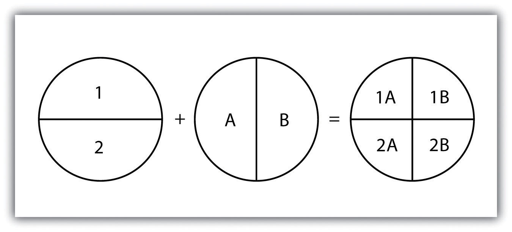
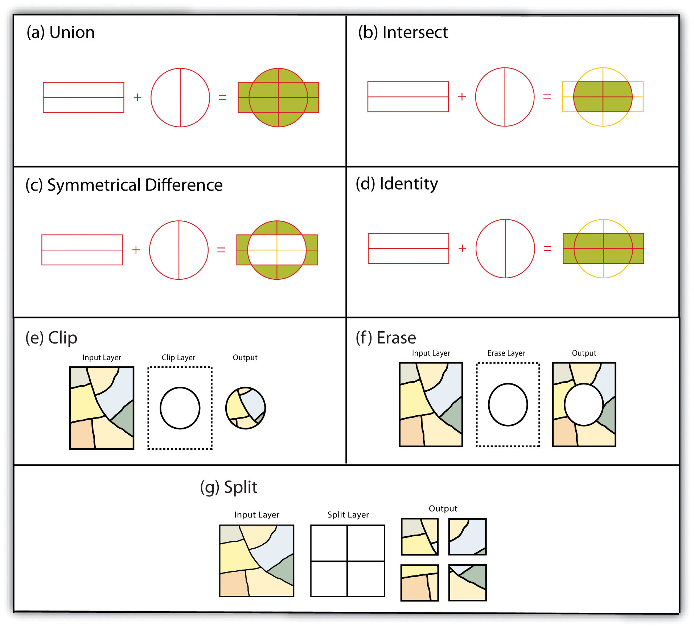
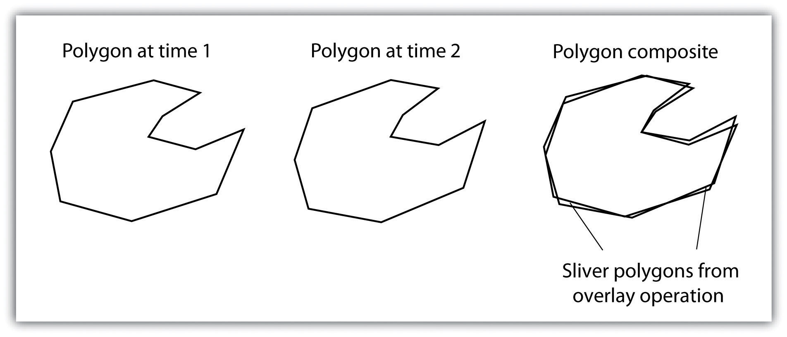

Among the most powerful and commonly used tools in a geographic information system (GIS) is the overlay of cartographic information. In a GIS, an overlayThe process of taking two or more different thematic maps of the same area and placing them on top of one another to form a new map. is the process of taking two or more different thematic maps of the same area and placing them on top of one another to form a new map (Figure 7.4 "A Map Overlay Combining Information from Point, Line, and Polygon Vector Layers, as Well as Raster Layers"). Inherent in this process, the overlay function combines not only the spatial features of the dataset but also the attribute information as well.
Figure 7.4 A Map Overlay Combining Information from Point, Line, and Polygon Vector Layers, as Well as Raster Layers
A common example used to illustrate the overlay process is, “Where is the best place to put a mall?” Imagine you are a corporate bigwig and are tasked with determining where your company’s next shopping mall will be placed. How would you attack this problem? With a GIS at your command, answering such spatial questions begins with amassing and overlaying pertinent spatial data layers. For example, you may first want to determine what areas can support the mall by accumulating information on which land parcels are for sale and which are zoned for commercial development. After collecting and overlaying the baseline information on available development zones, you can begin to determine which areas offer the most economic opportunity by collecting regional information on average household income, population density, location of proximal shopping centers, local buying habits, and more. Next, you may want to collect information on restrictions or roadblocks to development such as the cost of land, cost to develop the land, community response to development, adequacy of transportation corridors to and from the proposed mall, tax rates, and so forth. Indeed, simply collecting and overlaying spatial datasets provides a valuable tool for visualizing and selecting the optimal site for such a business endeavor.
Several basic overlay processes are available in a GIS for vector datasets: point-in-polygon, polygon-on-point, line-on-line, line-in-polygon, polygon-on-line, and polygon-on-polygon. As you may be able to divine from the names, one of the overlay dataset must always be a line or polygon layer, while the second may be point, line, or polygon. The new layer produced following the overlay operation is termed the “output” layer.
The point-in-polygon overlayAn overlay technique that creates an output point layer that includes all the points occurring within the spatial extent of the overlay layer. operation requires a point input layer and a polygon overlay layer. Upon performing this operation, a new output point layer is returned that includes all the points that occur within the spatial extent of the overlay (Figure 7.4 "A Map Overlay Combining Information from Point, Line, and Polygon Vector Layers, as Well as Raster Layers"). In addition, all the points in the output layer contain their original attribute information as well as the attribute information from the overlay. For example, suppose you were tasked with determining if an endangered species residing in a national park was found primarily in a particular vegetation community. The first step would be to acquire the point occurrence locales for the species in question, plus a polygon overlay layer showing the vegetation communities within the national park boundary. Upon performing the point-in-polygon overlay operation, a new point file is created that contains all the points that occur within the national park. The attribute table of this output point file would also contain information about the vegetation communities being utilized by the species at the time of observation. A quick scan of this output layer and its attribute table would allow you to determine where the species was found in the park and to review the vegetation communities in which it occurred. This process would enable park employees to make informed management decisions regarding which onsite habitats to protect to ensure continued site utilization by the species.
Figure 7.5 Point-in-Polygon Overlay
As its name suggests, the polygon-on-point overlayAn overlay technique that creates a polygon layer from those input polygons that overlay features in a point layer. operation is the opposite of the point-in-polygon operation. In this case, the polygon layer is the input, while the point layer is the overlay. The polygon features that overlay these points are selected and subsequently preserved in the output layer. For example, given a point dataset containing the locales of some type of crime and a polygon dataset representing city blocks, a polygon-on-point overlay operation would allow police to select the city blocks in which crimes have been known to occur and hence determine those locations where an increased police presence may be warranted.
Figure 7.6 Polygon-on-Point Overlay
A line-on-line overlayAn overlay technique in which output from this operation is a point(s) located at the intersection(s) of the two linear datasets. operation requires line features for both the input and overlay layer. The output from this operation is a point or points located precisely at the intersection(s) of the two linear datasets (Figure 7.7 "Line-on-Line Overlay"). For example, a linear feature dataset containing railroad tracks may be overlain on linear road network. The resulting point dataset contains all the locales of the railroad crossings over a town’s road network. The attribute table for this railroad crossing point dataset would contain information on both the railroad and the road over which it passed.
Figure 7.7 Line-on-Line Overlay
The line-in-polygon overlayAn overlay technique in which each line that has any part of its extent within the overlay polygon layer will be included in an output line layer. operation is similar to the point-in-polygon overlay, with that obvious exception that a line input layer is used instead of a point input layer. In this case, each line that has any part of its extent within the overlay polygon layer will be included in the output line layer, although these lines will be truncated at the boundary of the overlay (Figure 7.9 "Polygon-on-Line Overlay"). For example, a line-in-polygon overlay can take an input layer of interstate line segments and a polygon overlay representing city boundaries and produce a linear output layer of highway segments that fall within the city boundary. The attribute table for the output interstate line segment will contain information on the interstate name as well as the city through which they pass.
Figure 7.8 Line-in-Polygon Overlay

The polygon-on-line overlayAn overlay technique in which polygon features that overlay lines are selected and subsequently preserved in an output layer. operation is the opposite of the line-in-polygon operation. In this case, the polygon layer is the input, while the line layer is the overlay. The polygon features that overlay these lines are selected and subsequently preserved in the output layer. For example, given a layer containing the path of a series of telephone poles/wires and a polygon map contain city parcels, a polygon-on-line overlay operation would allow a land assessor to select those parcels containing overhead telephone wires.
Figure 7.9 Polygon-on-Line Overlay
Finally, the polygon-in-polygon overlayAn overlay technique in which a polygon input and overlay layers are combined to create an output polygon layer with the extent of the overlay. operation employs a polygon input and a polygon overlay. This is the most commonly used overlay operation. Using this method, the polygon input and overlay layers are combined to create an output polygon layer with the extent of the overlay. The attribute table will contain spatial data and attribute information from both the input and overlay layers (Figure 7.10 "Polygon-in-Polygon Overlay"). For example, you may choose an input polygon layer of soil types with an overlay of agricultural fields within a given county. The output polygon layer would contain information on both the location of agricultural fields and soil types throughout the county.
Figure 7.10 Polygon-in-Polygon Overlay
The overlay operations discussed previously assume that the user desires the overlain layers to be combined. This is not always the case. Overlay methods can be more complex than that and therefore employ the basic Boolean operators: AND, OR, and XOR (see Section 6.1.2 "Measures of Central Tendency"). Depending on which operator(s) are utilized, the overlay method employed will result in an intersection, union, symmetrical difference, or identity.
Specifically, the unionAn overlay method that preserves all features, attribute information, and spatial extents from an input layer. overlay method employs the OR operator. A union can be used only in the case of two polygon input layers. It preserves all features, attribute information, and spatial extents from both input layers (part (a) of Figure 7.11 "Vector Overlay Methods "). This overlay method is based on the polygon-in-polygon operation described in Section 7.1.1 "Buffering".
Alternatively, the intersectionAn overlay method that contains common features and attributes from both the input and overlay layers. overlay method employs the AND operator. An intersection requires a polygon overlay, but can accept a point, line, or polygon input. The output layer covers the spatial extent of the overlay and contains features and attributes from both the input and overlay (part (b) of Figure 7.11 "Vector Overlay Methods ").
The symmetrical differenceAn overlay method that contains those areas common to only one of the feature datasets. overlay method employs the XOR operator, which results in the opposite output as an intersection. This method requires both input layers to be polygons. The output polygon layer produced by the symmetrical difference method represents those areas common to only one of the feature datasets (part (c) of Figure 7.11 "Vector Overlay Methods ").
In addition to these simple operations, the identityAn overlay method that creates an output layer with the spatial extent of the input layer but includes attribute information from an overlay. (also referred to as “minus”) overlay method creates an output layer with the spatial extent of the input layer (part (d) of Figure 7.11 "Vector Overlay Methods ") but includes attribute information from the overlay (referred to as the “identity” layer, in this case). The input layer can be points, lines, or polygons. The identity layer must be a polygon dataset.
Figure 7.11 Vector Overlay Methods
In addition to the aforementioned vector overlay methods, other common multiple layer geoprocessing options are available to the user. These included the clip, erase, and split tools. The clipA geoprocessing operation that extracts those features from an input point, line, or polygon layer that falls within the spatial extent of a clip layer. geoprocessing operation is used to extract those features from an input point, line, or polygon layer that falls within the spatial extent of the clip layer (part (e) of Figure 7.11 "Vector Overlay Methods "). Following the clip, all attributes from the preserved portion of the input layer are included in the output. If any features are selected during this process, only those selected features within the clip boundary will be included in the output. For example, the clip tool could be used to clip the extent of a river floodplain by the extent of a county boundary. This would provide county managers with insight into which portions of the floodplain they are responsible to maintain. This is similar to the intersect overlay method; however, the attribute information associated with the clip layer is not carried into the output layer following the overlay.
The eraseA geoprocessing operation that preserves only those areas outside the extent of an erase layer. geoprocessing operation is essentially the opposite of a clip. Whereas the clip tool preserves areas within an input layer, the erase tool preserves only those areas outside the extent of the analogous erase layer (part (f) of Figure 7.11 "Vector Overlay Methods "). While the input layer can be a point, line, or polygon dataset, the erase layer must be a polygon dataset. Continuing with our clip example, county managers could then use the erase tool to erase the areas of private ownership within the county floodplain area. Officials could then focus specifically on public reaches of the countywide floodplain for their upkeep and maintenance responsibilities.
The splitA geoprocessing operation that divides an input layer into two or more layers based on a split layer. geoprocessing operation is used to divide an input layer into two or more layers based on a split layer (part (g) of Figure 7.11 "Vector Overlay Methods "). The split layer must be a polygon, while the input layers can be point, line, or polygon. For example, a homeowner’s association may choose to split up a countywide soil series map by parcel boundaries so each homeowner has a specific soil map for their own parcel.
A spatial join is a hybrid between an attribute operation and a vector overlay operation. Like the “join” attribute operation described in Section 5.2.2 "Joins and Relates", a spatial join results in the combination of two feature dataset tables by a common attribute field. Unlike the attribute operation, a spatial join determines which fields from a source layer’s attribute table are appended to the destination layer’s attribute table based on the relative locations of selected features. This relationship is explicitly based on the property of proximity or containment between the source and destination layers, rather than the primary or secondary keys. The proximity option is used when the source layer is a point or line feature dataset, while the containment option is used when the source layer is a polygon feature dataset.
When employing the proximity (or “nearest”) option, a record for each feature in the source layer’s attribute table is appended to the closest given feature in the destination layer’s attribute table. The proximity option will typically add a numerical field to the destination layer attribute table, called “Distance,” within which the measured distance between the source and destination feature is placed. For example, suppose a city agency had a point dataset showing all known polluters in town and a line dataset of all the river segments within the municipal boundary. This agency could then perform a proximity-based spatial join to determine the nearest river segment that would most likely be affected by each polluter.
When using the containment (or “inside”) option, a record for each feature in the polygon source layer’s attribute table is appended to the record in the destination layer’s attribute table that it contains. If a destination layer feature (point, line, or polygon) is not completely contained within a source polygon, no value will be appended. For example, suppose a pool cleaning business wanted to hone its marketing services by providing flyers only to homes that owned a pool. They could obtain a point dataset containing the location of every pool in the county and a polygon parcel map for that same area. That business could then conduct a spatial join to append the parcel information to the pool locales. This would provide them with information on the each land parcel that contained a pool and they could subsequently send their mailers only to those homes.
Although overlays are one of the most important tools in a GIS analyst’s toolbox, there are some problems that can arise when using this methodology. In particular, sliversA narrow gap formed when the shared boundary of two polygons do not meet exactly. are a common error produced when two slightly misaligned vector layers are overlain (Figure 7.12 "Slivers"). This misalignment can come from several sources including digitization errors, interpretation errors, or source map errors (Chang 2008).Chang, K. 2008. Introduction to Geographic Information Systems. New York: McGraw-Hill. For example, most vegetation and soil maps are created from field survey data, satellite images, and aerial photography. While you can imagine that the boundaries of soils and vegetation frequently coincide, the fact that they were most likely created by different researchers at different times suggests that their boundaries will not perfectly overlap. To ameliorate this problem, GIS software incorporates a cluster toleranceA geoprocessing setting that forces nearby vertices to be snapped together if they fall within a user-specified distance. option that forces nearby lines to be snapped together if they fall within a user-specified distance. Care must be taken when assigning cluster tolerance. Too strict a setting will not snap shared boundaries, while too lenient a setting will snap unintended, neighboring boundaries together (Wang and Donaghy 1995).Wang, F., and P. Donaghy. 1995. “A Study of the Impact of Automated Editing on Polygon Overlay Analysis Accuracy.” Computers and Geosciences 21: 1177–85.
Figure 7.12 Slivers
A second potential source of error associated with the overlay process is error propagation. Error propagationWhen inaccuracies are present in the original input and overlay layers and are carried through to an output layer. arises when inaccuracies are present in the original input and overlay layers and are propagated through to the output layer (MacDougall 1975).MacDougall, E. 1975. “The Accuracy of Map Overlays.” Landscape Planning 2: 23–30. These errors can be related to positional inaccuracies of the points, lines, or polygons. Alternatively, they can arise from attribute errors in the original data table(s). Regardless of the source, error propagation represents a common problem in overlay analysis, the impact of which depends largely on the accuracy and precision requirements of the project at hand.